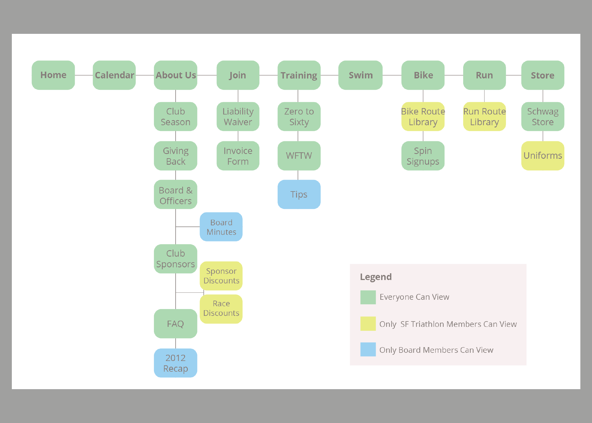
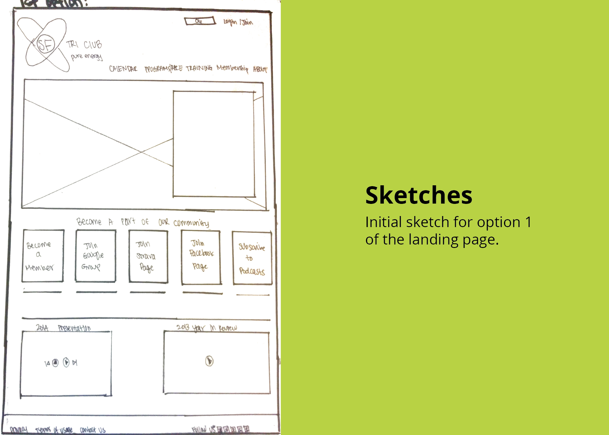
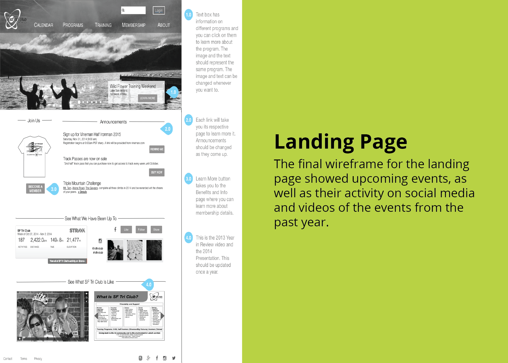
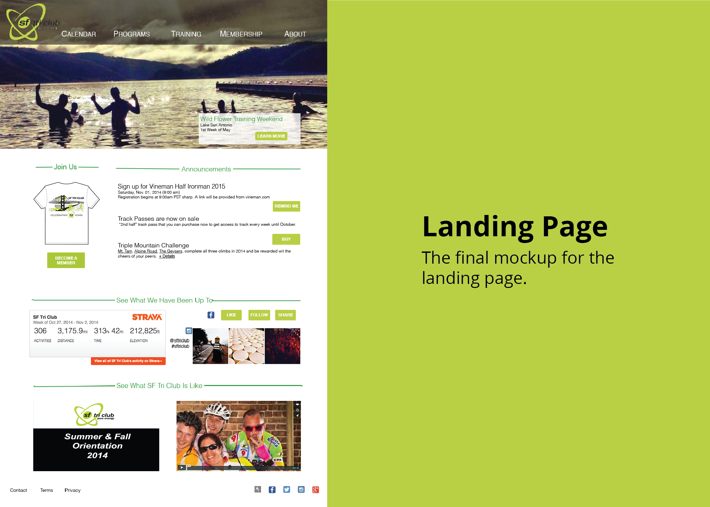

Informational Website
Team Members: Lei Lei and Vasavi Reddy
My Role: User Experience and Visual Design
The Problem: SF Triathlon Club's membership numbers decreased drastically over the last year. They asked us to create a more aesthetic, mobile-responsive website, in hopes of increasing membership numbers.
Our first step was to take a look at the membership management platform that SF Triathlon Club was using. We quickly found that we would have many design constraints to keep in mind as we created our designs.
After understanding the platform a bit more, we started talking to different members to get their insights on the current website. We learned that members found the website to be outdated and not functional in terms of navigation. Using this information, we worked hard to create a sitemap that efficiently navigated members throughout the website.
Once we created an easier and more efficient navigation, we went into creating user flows of the step-by-step process members would take and tried to make it as quick and effective as possible. From here, we created our initial sketches, wireframes, and full blown-out prototypes.
From here, we showed the Board Members different layouts of the pages and got a lot of feedback on our designs. Using this feedback, we iterated on our initial wireframes and prototypes.
We wanted to do some additional testing, so we then got some feedback from various SF Triathlon Club members. After all of the usability testing, we made some minor changes based off of the user's insights, and we then went on to create mock-ups.
The membership management platform they were using had a lot of capabilities that were not being used at the moment. One of our biggest recommendations for SF Triathlon Club was to learn the platform a bit more, so they didn't have to do as much manual editing.
One thing members were looking for was a mobile-responsive website. Since the plaform they were using didn't allow for a mobile-responsive website, we recommended that they think about changing platforms in the future or creating a mobile application.
